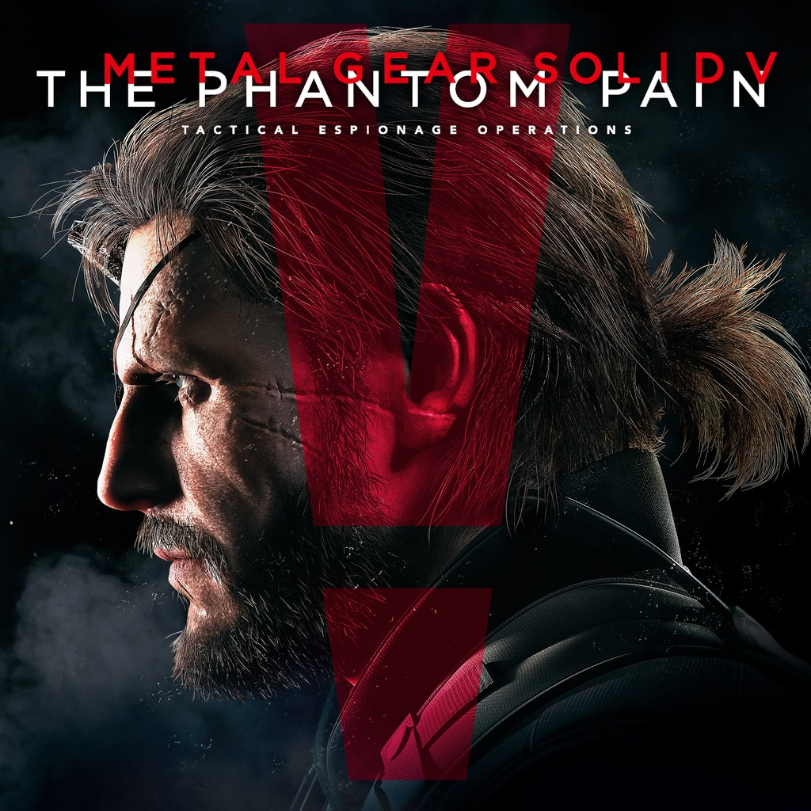

|
God of War |
God of War Ragnarök é um jogo eletrônico de ação-aventura
desenvolvido pela Santa Monica Studio e publicado pela Sony Interactive Entertainment. |
|  |
Metal Gear Solid V: The Phantom Pain |
A franquia toma um novo rumo, com tecnologia de ponta e mais liberdade para o jogador que pode aventurar-se em missões à escolha num mundo aberto.
Honrando a saga, este é um dos melhores jogos para a plataforma PS4, muito recomendado. |
.jpeg) |
Grand Theft Auto V (GTA V) |
O GTA V é um dos jogos recomendados para PS4, com mundo aberto, missões a cumprir e uma atmosfera envolvente na cidade de Los Santos. A fama e o crime pautam a ação, cada qual explorando formas arriscadas, necessárias para sobreviver.
|
| |
Red Dead Redemption 2 |
Aclamado como o melhor jogo para PS4, Red Dead Redemption 2 é uma aventura épica que celebra e recria os últimos anos do século XIX e o último
esgar selvagem do Oeste norte-americano. O jogo tem um mundo vasto e a atmosfera é perfeita. |